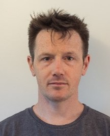

Team Profile
Team Name: <nu>recruITs
We chose the name <nu>recruITs for our team name. We quickly established that we were all new to University study, and almost all of us were studying our first formal IT course. The enthusiasm we showed in our first meetings reminded us of recruits, eager to produce quality work and impress their employers. We loved that the word recruit has IT buried inside it. The spelling of nu felt modern and eye-catching, with a subtle nod to University. The tags surrounding nu highlight our learning of HTML in this course.
Individual Profiles
Bradley Pavey
I played sport from the age of seven years old. Until I was seventeen years old. I played basketball as a point guard and I played almost everyday of the week, most weekends I would play between three to four games all at separate stadiums as well as train and play more games during the week. I would be a leader on the court, running team plays, giving other players confidence to take an opportunity when they are open for it. I was known for my defensive skills, ball control, ability to read and run a play. I would call out our defense strategy on the court in real time, back myself and the team in. I learned to be a referee of the sport as well. I would always play right on the edge sometimes being fouled out many times. I would play aggressive but fair, with mind games involved as a separate aspect of game to get in my opponents heads. I Became interested in I.T through my Father and Brothers. My brothers always played games when I was younger, they have all played World of Warcraft since it was first released. I use to play on my brother's computer when I was eight years old. I would play his World of Warcraft account while he would teach me how to play the game. This is what peaked my interest in I.T. I was amazed at the fact I could play games with people who were not in the same house. Moving on from games my father is really into programming through linux, especially with everything you can do with a raspberry pi and this is where I get my love for programming from. I am someone who is Australian through and through, I have a sense to protect my country and it is a dream of mine to be able to do so. I choose cyber analyst because I believe that the next global conflict will be based around computers and countries sensitive data before any physical conflict.
Lachlan Jensen
My name is Lachlan Jensen, and I am part of the nuRecruITs team. I was born in Melbourne, Victoria. Throughout my childhood, my family travelled a lot due to my father’s occupation. This led to me completing the majority of my schooling outside of Australia, in countries such as Switzerland, Malaysia and the United States. During this time abroad it allowed me to experience many different cultures and meet some extremely interesting people. I think that this experience helps me relate to a wide range of people and has helped me get the most out of life. My favourite hobbies are Music, PC gaming and Anime/Manga. I learnt the Guitar and Piano from an early age from my grandmother and I have been playing since then. Music is a huge part of my life, and I couldn’t imagine spending a whole day away from my guitar. I first became interested in IT from playing computer games at an early age and have recently begun to formalise my knowledge by completing my Diploma in Information Technology Networking, I am now studying at RMIT to get a degree and to continue to build my skills.
Nicholas Richards

I work as a professional firefighter and live in the NSW Southern Highlands. I am a nerd in a jock's body: I love to lift weights and carve up a touch footy field, but prefer to play a board game or talk philosophy and history than watch cricket or have a beer at the pub. I dabbled in coding as my first 'lockdown hobby' of 2020 and was instantly hooked on the dopamine dump I received when the machine did what I instructed it to. I love the logic, precision and predictability of programming, and the tricks you can learn to make your code more attractive, efficient and powerful.
Jeremy Baker

Hello and welcome to my profile, hopefully I can provide some information about my past present and future. I could be considered as being middle aged; however, I still feel I’m pretty much the same as when I was younger. I feel a lot less worry getting older, and I try to keep a positive perspective on things. My hobbies are reading, gardening, cooking and generally finding interesting things on the www. Previously I had studied laboratory technology Information, a fascinating broad field and now information technology has become my choice of study. Before beginning this, I had very little experience in IT, other than being an end user. It is a bit frustrating sometimes but there is almost always a solution somewhere. It is a genuine challenge, and I am enjoying learning and applying new skills.
Anthony Namroud
Hi, I’m Anthony, at a young age my passion for information technology (IT) which started in gaming, HTML programming, CSS formatting and the use of Microsoft (MS) Excel (including macros). My favourite hobbies include, spending time with family, camping, fishing, designing my own MS Excel budgeting platform and watching YouTube. I have no current experience in IT, though my interest in IT grew out of self-learning and to seek a change in my career from working in a warehouse, then to achieve my goal of getting my job of interest in Cyber Security.
Jacob Brakespeare
I live on a farm in the beautiful south-west of West Australia, where I spend most of my day working and raising livestock. I love history, the good, the bad, the Crazy and everything in-between. I also have a love for Movies, Books, Video games & Music, all of which at some point in my life shaped me into who I am. I have always considered myself as someone with a very logical Straightforward mind, which I think has lead me towards IT. The ability to construct formulas and rules all with set paths and outcomes is a very positive aspect I would love to work with in my work-life.